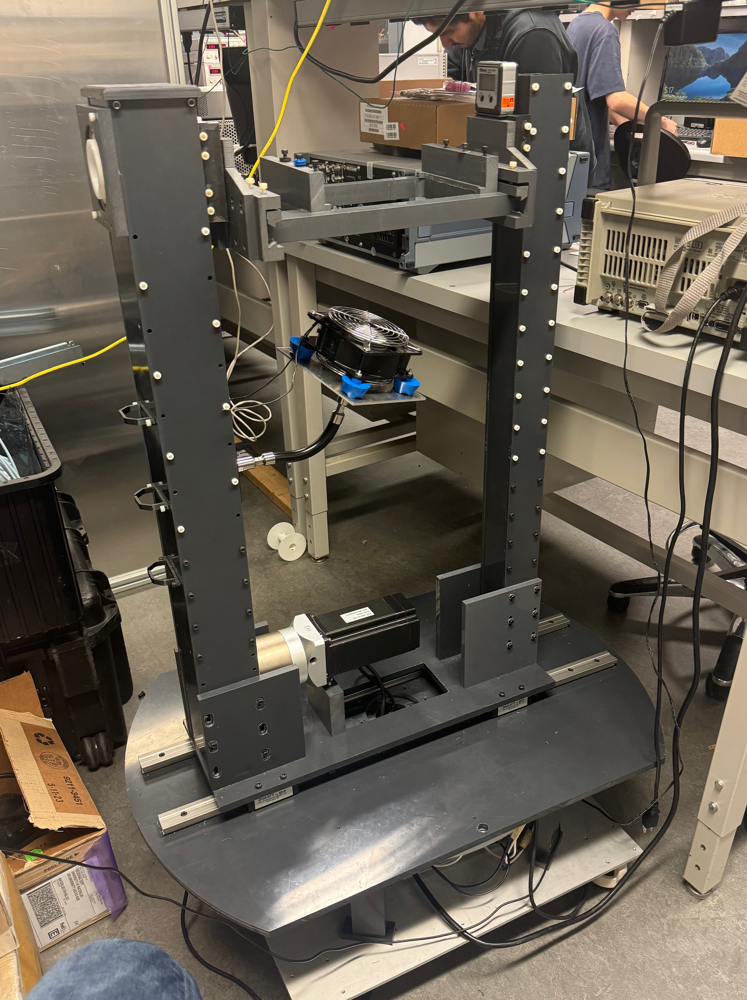
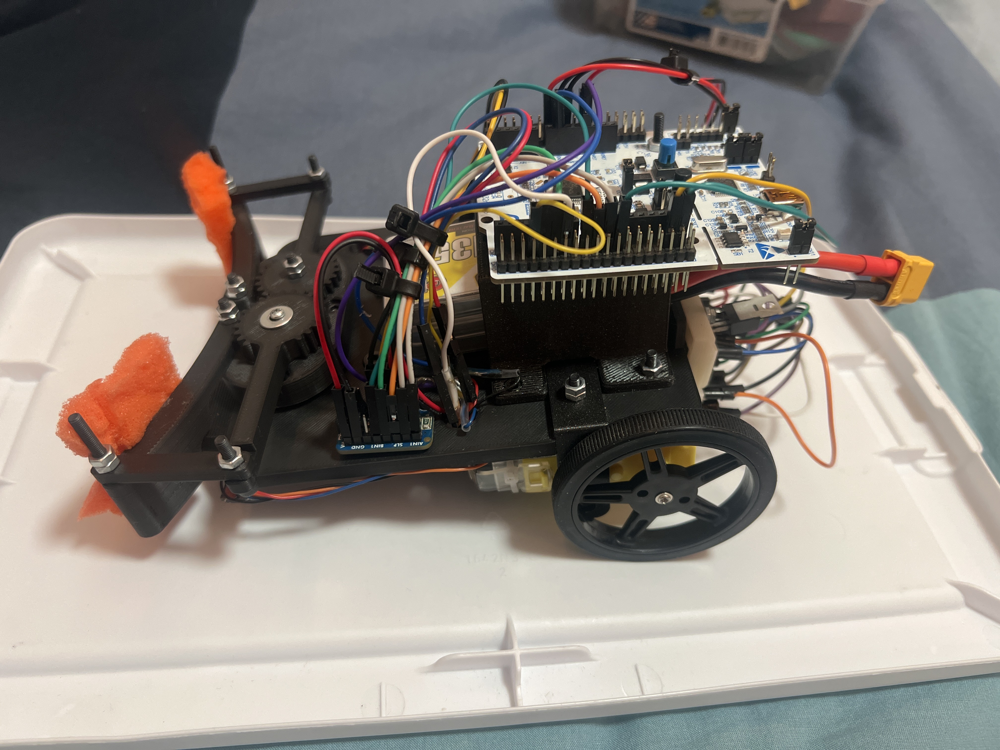
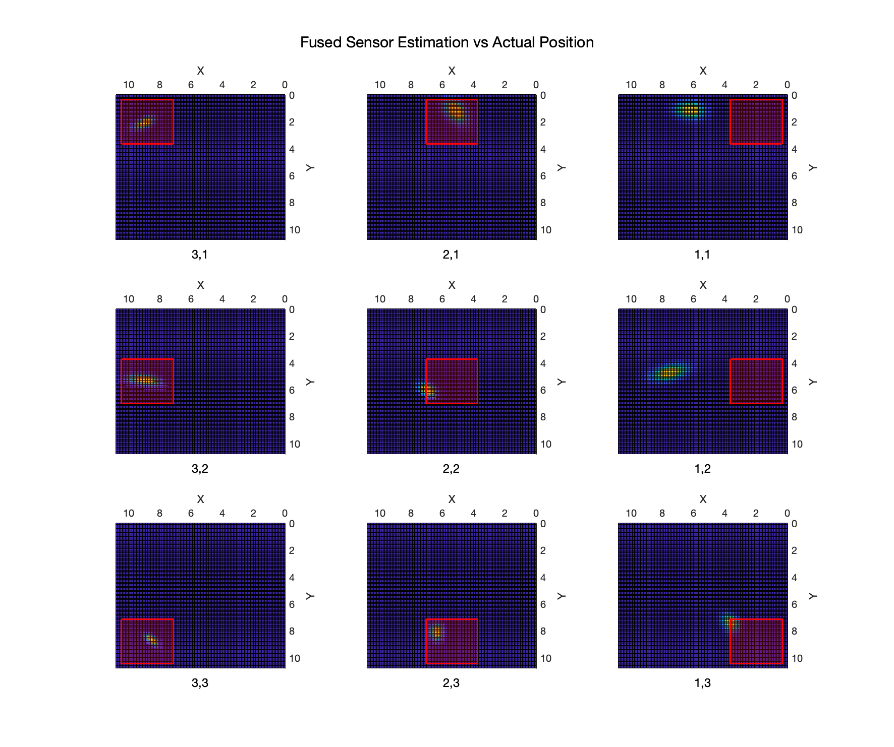
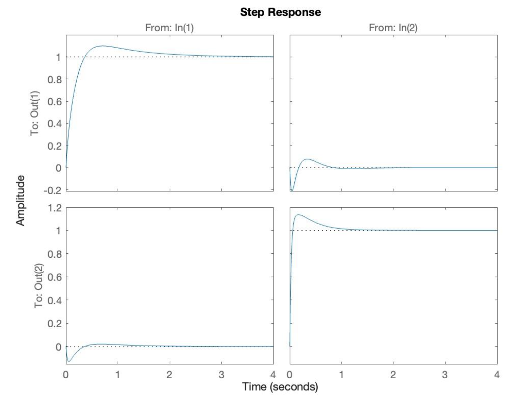
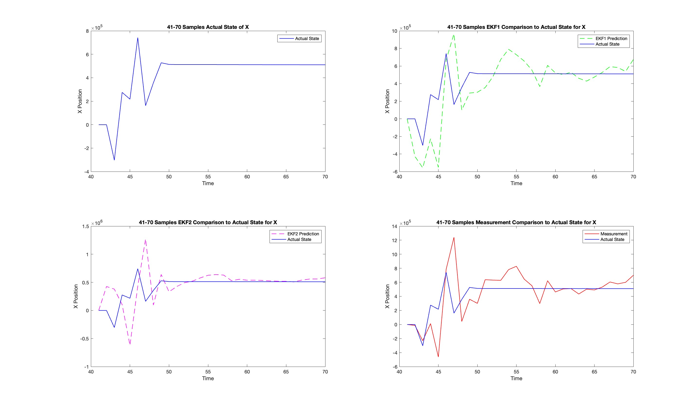

About
Projects
Experience
Contact
EmRG Dual Axis Antenna Positioner
Built to help position radio system antennae under test
Achieved precise azimuth and elevation adjustments, high weight capacity, and comparable performance to commercial positioners for <10% of the price
Software (Matlab), Hardware, Project Management

Rally and Rehab (Capstone Project)
Designed and prototyped a sleeve embedded with sensors to provide racket sport-specific biomechanical analysis
Team leader of the award-winning project
Software (Python), Hardware, Project Management, Sensor Data Fusion, Data Analysis
Doppler-Based Vehicle Speed Estimation
Implemented and compared an Unscented Kalman Filter and a Convolutional Neural Network for vehicle speed estimation based on the Doppler effect
Achieved <2.7 km/h average error with CNN
Software (Matlab, Python), Machine Learning, Data Fusion
Line-Following Rescue Robot
Designed and built a fully autonomous robot to navigate a course, pick up a Lego character, and return to the start
Team leader of successful project
Software (C++), Hardware, Project Management, Controls, Sensor Data Fusion

IR Sensor and Thermocouple Based Localization
Modeled sensors with Gaussian noise analysis
Used sensor fusion to combine probabilistic Gaussian distributions to localize heated block
Implemented EKF to track object motion in real time with <5% error
Software (Matlab, Simulink), Data Fusion

ANN for Wind Turbine Fault Detection
Built 2 ANNs for 2 accelerometer data points
Tested different normalization methods, architecture, and activation functions
Applied sensor fusion to achieve 97% accuracy
Software (Python), Data Fusion, Machine Learning

Waterloo VIP Lab Website
Built entire website for VIP Lab ensuring easy upkeep
Implemented fully autonomous updates to personal pages by pulling scholar data from Scopus API
Automatically linked open access papers using an API
Software (CSS, HTML, PHP, JS), Project Management
Nonlinear Spacecraft Navigation State Estimation
Implemented an EKF for a 7-state vector using noisy measurements and probabilistic event-driven disturbances
Derived nonlinear models; tried constant and time-decaying, event-based noise matrices
Software (Matlab), Data Fusion

Pressure Sensor Model Design and Validation
Designed a 2nd-order linear regression model
Applied various filters to reduce noise; evaluated various regressors
Achieved R² = 0.96, RMSE = 0.005; tested robustness with bootstrapping
Software (Matlab), Data Analysis, Machine Learning